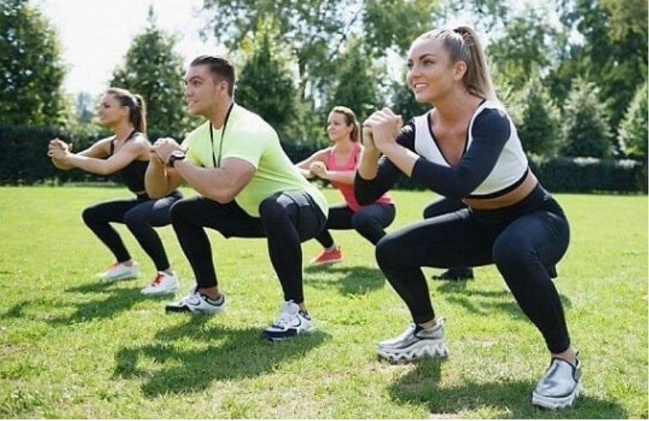

Ini mungkin mengejutkan Anda. Tetapi salah satu cara terbaik untuk menghindari nyeri sendi adalah makan makanan yang tepat. Jika Anda sering berolahraga, Anda mengalami cedera otot ketika Anda mengangkat beban yang berat, berlari di atas treadmill atau berolahraga dengan sepeda statis. Dan jika Anda salah makan, tubuh Anda akan sulit dipertahankan. "Jika otot tidak sehat tidak dapat pulih, stres pada akhirnya dapat merusak sendi karena otot tidak mampu menopang berat badan," kata Adam Friedman, pelatih di institut. Gold's Fitness Gym Menjelaskan Ahli Gizi dan Gold Ahli Gizi Menjelaskan
Alih-alih mulai berolahraga segera, Anda perlu melakukan pemanasan dengan gerakan lembut. "Ini semua biomekanik," kata Walter Bortz, pakar kesehatan dan pelari maraton. Benar. "Yang penting adalah membuat gerakan itu dinamis." Dengan bantuan peregangan, itu menghasilkan cairan yang tampan. Yang dibutuhkan untuk pelatihan lebih lanjut, "tambah Friedman.
Dalam kebanyakan kasus, nyeri sendi disebabkan oleh kelemahan otot Alasan: Kelemahan otot tidak dapat mendukung gerakan yang menciptakan tekanan tambahan pada sendi. Alih-alih menguatkan tendon yang menghubungkan sendi, pembentukan otot lebih efektif.
Hal terpenting dalam mencegah nyeri sendi adalah memiliki gaya hidup aktif. Menjadi malas menyebabkan lebih banyak kemalasan yang mengarah pada kelemahan otot dan nyeri sendi. "Yang paling penting adalah pencegahan," kata Dr Borts. "Gelisah bukanlah pilihan jika Anda tidak bisa berlari, berenang jika Anda Tidak bisa berenang, naik sepeda "
